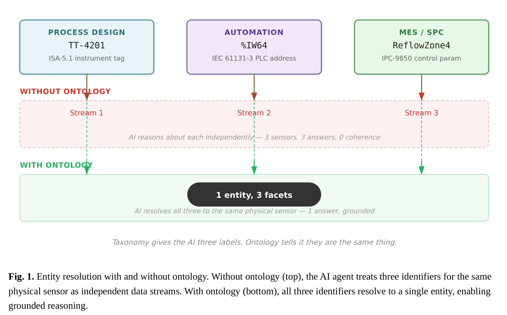
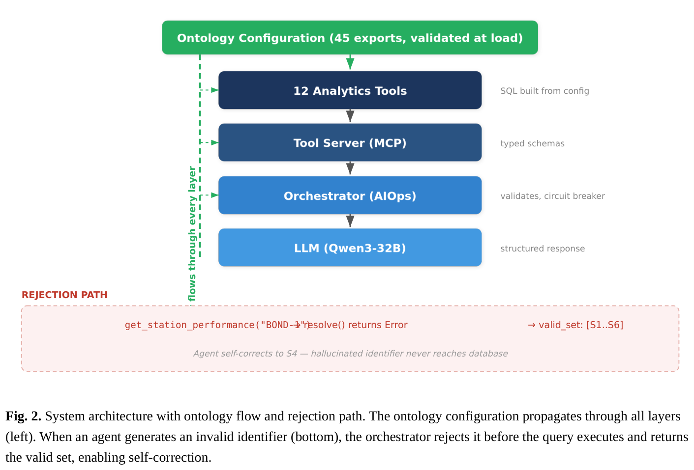

全文翻译
前言、摘要与目录
Grama Chethana*
* 西门子数字工业软件（Siemens Digital Industries Software），美国得克萨斯州普莱诺
通讯作者：grama.chethan@siemens.com
关键词： 语义训练鸿沟；制造本体；AI 智能体系统；数字孪生；工具参数语义锚定；AIOps
术语说明： grounded 理解（grounded understanding）指与制造操作语义相衔接的理解，区别于仅具统计流畅性的术语使用；本体 grounding（ontology grounding）指以制造本体在运行时约束并锚定 AI 工具调用参数。后文首次出现英文术语时附中文释义，此后以中文表述为主。
要点
- 识别工业 AI 智能体中的语义训练鸿沟
- 本体约束下消除 43% 的工具调用幻觉
- 形式化接口契约确保跨领域可移植性
- 架构在六种行业配置中得到验证
- 将语义漂移定义为系统性多智能体失效模式
摘要
基于大语言模型（LLM）的 AI 智能体越来越多地部署于制造环境，用于分析、质量管理和决策支持。这些智能体在领域术语上表现出统计层面的流畅性，却缺乏 grounded 理解（grounded understanding，与操作语义相衔接的理解），即在特定生产语境下，将设备标识符、工艺参数、故障代码与监管约束关联起来的关系结构。本文识别并形式化了语义训练鸿沟：AI 系统通过训练获取领域词汇的方式，与制造运营通过本体关系定义含义的方式之间存在结构性断裂。本文证明，这一鸿沟即使在模型回答语言精确时也会导致操作层面的错误输出；在多智能体配置中，还会产生本文称为语义漂移的复合失效模式。为弥合这一鸿沟，本文提出一种架构：将制造本体直接嵌入 AI 工具层，作为类型化关系配置，在运行时强制语义约束，而非依赖模型训练。该架构形式化为三操作接口契约（resolve（解析）、contextualize（上下文化）、annotate（标注）），并由 AIOps 编排层强制执行不变量。在六种行业配置的对照实验（使用 Qwen3-32B 共 72 次工具调用）中，无约束工具参数对领域标识符产生 43% 的幻觉率；本体约束的工具参数将其降至 0%。本文通过数字孪生分析平台验证该方案：单一代码库配合领域特定本体配置，可消除工具调用幻觉，并在无需修改应用代码的情况下实现跨领域可配置性。
语义训练鸿沟：面向工业 AI 智能体系统的本体论工具架构
前言、摘要与目录
第一部分 理论基础与失效模式
-
引言
-
相关工作
-
理论基础：标签、分类法与本体
-
观察到的失效模式
第二部分 接口契约与 AIOps 架构
-
本体约束的工具执行接口契约
-
AIOps 强制架构
第三部分 实验评估与讨论
-
实验评估
-
讨论
-
结论
引言
回流焊产线上有一台温度变送器。在工艺工程师的世界里，它是仪器 TT-4201，按 ISA-5.1 [1] 标注。在可编程逻辑控制器（PLC）程序中，它是 %IW64，按 IEC 61131-3 [2] 寻址。在制造执行系统（MES）中，它是 "ReflowZone4"，一个按 IPC-9850 限值 [3] 监控的统计过程控制（SPC）参数。三个名字，同一物理设备，三个从不共享模式的工程团队。当这三条数据流被提交给一个基于 LLM 的 AI 智能体，并询问"该工位是否在规格内运行？"时，智能体会流畅作答。它知道设备综合效率（OEE）的含义、SPC 代表什么、IPC-9850 规范什么。然而，它不知道 TT-4201、%IW64 和 ReflowZone4 指向同一传感器。它把它们当作三个独立数据点，分别推理，给出语言精确、操作错误的答案。这一失效不能归因于模型质量。它代表 AI 系统训练方式、企业定义操作现实方式，以及自主智能体在运行时作用于该现实方式之间的结构性断裂。本文将这一断裂称为语义训练鸿沟，不是因为模型训练有误，而是因为仅靠训练无法弥合统计流畅性与操作含义之间的鸿沟。多智能体 AI 系统 [4,5] 的出现引入了一种复合失效模式。当多个专用智能体在没有共享本体基础的情况下操作共享制造数据时，每个智能体都会嵌入自己对领域概念的解释，这些解释随时间发散。本文将这种复合发散称为语义漂移，一种区别于单个模型错误的系统性状况。本文贡献如下：
- 识别并形式化语义训练鸿沟，将其作为工业 AI 系统中独立的失效类别，区别于模型幻觉、数据质量和提示工程不足；并识别工具参数伪造作为特定幻觉类别，区别于事实性幻觉，并在六个制造领域量化其发生率（第 3、7 节）。
- 三操作接口契约（resolve、contextualize、annotate），形式化制造 AI 系统中本体约束的工具执行的要求，含会话一致性、版本不可变性和熔断等不变量（第 5 节）。
- AIOps 强制架构，通过执行前验证、执行中熔断器和执行后结构化，使本体约束在运行时成为可执行约束（第 6 节）。
- 对照幻觉实验，证明本体约束的工具参数消除工具调用幻觉（72 次查询、六种行业配置、Qwen3-32B：0% 与 43%）（第 7 节）。本文其余部分组织如下：第 2 节回顾相关工作；第 3 节给出理论基础；第 4 节描述观察到的失效模式；第 5 节形式化接口契约并规定本体配置结构；第 6 节描述 AIOps 强制架构；第 7 节呈现实验评估；第 8 节讨论局限性、可扩展性与现有制造标准的集成；第 9 节总结。
理论基础：标签、分类法与本体
3.1 机器学习中的标签假设
标准企业 AI 流水线遵循四阶段：收集数据、标注、训练模型、部署。其中嵌入一个未经审视的假设：给数据贴标签就能教会系统该标签的含义。标签说"这是一个温度读数"。含义说"若该温度读数超过该产品变型的轮廓规格，则触发不合格报告，且零件进入下一工位前需经 NADCAP 认证复检"。标签是名词。含义是约束、依赖和因果关系的网络 [6]。机器学习擅长从名词学习。企业制造运营运行在关系网络上。
3.2 分类法 与 本体
分类法按分类组织知识，包括层次、类别和标签。它回答"这是哪类事物？"，优化模式识别 [30]。本体按关系组织知识，包括约束、依赖和因果链。它回答"该事物与其他一切如何关联？"，优化推理 [6,7]。多数企业构建分类法，少数构建本体 [17]。差异如同零件目录与工程规范。分类法给出三个条目（TT-4201、%IW64、ReflowZone4），归入三个独立层次。本体捕获它们是同一实体，由共享信号定义桥接。分类法告诉你事物叫什么；本体告诉你其中一个失效时会发生什么。

观察到的失效模式
4.1 单智能体系统中的工具调用幻觉
在基于数字孪生仿真框架构建的制造分析平台开发过程中，本文部署了 12 个分析工具，参数为无约束字符串。智能体（Qwen3-32B，32K 上下文，函数调用模式，部署于企业 AI 平台）可访问正确数据、SQL 模板和领域词汇。当被问及"显示键合工位的不合格趋势"时，智能体给出结构良好的分析：引用胶粘剂固化温度超限、NADCAP 工艺规范 [31]，并呈现故障模式帕累托图。行文技术流畅。底层 SQL 使用 WHERE station_id = 'BOND-1'。
ISA-95 合规模型 [11] 定义的设备层次中不存在名为 BOND-1 的工位。键合工位标识符为 S4，即六工位产线中的第四站。智能体幻觉出一个统计上看似合理的标识符，查询返回零行，工具响应空结果集，智能体将其解读为"未记录故障"，自信总结：键合工位质量优秀，未检测到不合格。实际上，该周键合工位是产线上不合格报告（NCR）率最高的工位。该失效模式区别于 LLM 中已有充分文献的幻觉问题 [24,25]，因为幻觉内容不是事实知识而是工具参数，决定系统检索何种数据的程序输入。幻觉事实可核查；幻觉查询参数静默返回错误数据。第 7 节对照实验量化该现象：72 次无约束参数工具调用中，43% 的标识符值由模型伪造。
4.2 多智能体系统中的语义漂移
在多智能体分析平台验证过程中，本文观察到三个在无共享本体约束时出现的具体漂移向量：
- 工具联邦缺口。 主端点暴露 4 个工具；聚合网关暴露 0 个。工具不会在智能体间自动联邦。两个智能体问同一问题却访问不同能力，产生结构不同的答案。
- 本体版本独立。 多智能体模式全局切换，非按会话。无机制确保智能体共享同一版本领域定义。智能体 A 可能在工位层次 version 1 上操作，智能体 B 在 version 2。
- 参数自由文本方差。 字符串类型工具参数允许智能体对同一概念使用不同标识符，"S1"、"CNC-Bay-1" 与 "North Machining Area"。每个语言上都有效，仅一个映射到本体。这些漂移向量在独立多智能体系统（非第 7 节实验评估所用数字孪生框架）的平台验证中观察到。本文注明该区别：问题在一平台识别，方案在另一平台实现并验证。产生漂移的架构模式，无约束参数、未联邦工具、版本独立智能体，与平台无关；方案针对结构性原因，与首次观察平台无关 [32]。
本体 grounding 工具执行的接口契约
5.1 本体配置规范
本体实现为类型化关系配置，即导出 45 个命名常量的 Python 模块，定义制造垂直领域的完整领域语义。每个模块 700–770 行纯数据结构（字典、列表、常量），无逻辑、无控制流、无外部依赖。模块在加载时验证：每个必需导出必须存在，否则系统失败并列出缺失项。
Listing 1. 45 导出接口，加载时验证。省略任何导出的配置模块将立即失败并给出清晰错误。导出组织为十类功能：工厂配置（代码、名称、班次、运营日）、设备层次（工位、工作中心、单元）、产品（料号、产量、工艺路线）、物料（原材料与成品、BOM）、质量（故障代码、检验计划、NCR 处置）、工艺参数（周期时间、FPY、换型时间）、人力（操作员、认证、技能）、工装（工具定义、工位分配）、工步模板、变更管理参数。
5.1.1 设备层次
STATIONS 字典定义设备层次。每项含工位名称、工作中心映射、周期时间范围、换型时间范围、一次通过率及质量门标志。结构跨垂直领域相同；值携带领域特定语义：
Listing 2. 相同字典结构、不同领域语义。航空航天 S1 为 CNC 铣床，周期 2–8 小时，FPY 95%；制药 S1 为配料站，周期 20–45 分钟，FPY 99%。
5.1.2 领域词汇与监管上下文
故障代码、检验计划、认证和监管映射按工位绑定。STATION_FAILURE_CODES 将各工位 ID 映射到其有效缺陷类型集；STATION_CERTIFICATIONS 映射工位到所需操作员认证；INSPECTION_PLANS 定义各操作的抽样策略和 GD&T 特征。这些非扁平列表，而是工具层在调用时消费的类型化集合。
5.1.3 本体复杂度指标
表 1. 各行业配置的本体复杂度。每行代表完整配置模块（700–770 行，45 导出）。六种配置中五种结构复杂度相同（6 工位、4 产品）；配置差异在语义内容（不同故障代码、监管机构、工艺参数）而非结构深度。结构异质本体（如 50+ 工位、层次化子区域）的验证列为第 8.2 节未来工作。
| 配置 | 工位 | 产品 | 故障代码 | 认证 | 检验计划 | 工具定义 | 监管机构 |
|---|---|---|---|---|---|---|---|
| 航空航天 | 6 | 4 | 24 | 6 | 6 | 6 | FAA / NADCAP |
| 制药 | 6 | 4 | 27 | 6 | 6 | 6 | FDA / 21 CFR 11 |
| 汽车 | 6 | 4 | 28 | 6 | 6 | 6 | IATF 16949 |
| 电子 | 6 | 4 | 27 | 6 | 6 | 6 | IPC |
| 食品饮料 | 14 | 4 | 28 | 6 | 14 | 8 | FDA / FSMA |
| 仓储† | 6 | 4 | 26 | 6 | 6 | 6 | OSHA / SEMI |
† 仓储配置测试 MES 形态实体模型能否表示非制造运营（订单履行、分区处理），将可移植性声明扩展至离散制造以外的 JMS 制造系统与供应链运营相邻领域。
5.1.4 跨域实体解析
配置提供声明跨命名系统身份的映射。需做范围决策：实体解析可为站点本地（各工厂维护自身映射，反映站点特定标签命名）或企业全局（跨站点共享单一规范映射）。多站点部署中，站点本地解析作为起点更实用，跨站点分析需要时再在其上构建企业全局解析。在既有工厂环境，这些映射可来自现有系统：OPC UA 地址空间提供设备层次和标签-实体映射 [15]，AutomationML 项目文件提供工厂拓扑和信号定义 [16]。
5.2 设计理由：类型化关系配置与形式公理化
本文中"本体"指第 5.1 节类型化关系配置，而非 OWL/描述逻辑意义下的形式公理化 [33]。该设计决策需论证，因其决定系统可支持的自动推理范围。形式 OWL 公理化可启用下位继承（subsumption）推理（键合工位是否为加工工位子类？）、一致性检查（配置是否内部矛盾？）和蕴含（entailment）（若 S4 需 NADCAP 认证而操作员 X 无，X 能否在 S4 工作？）。这些能力对设计时验证和知识工程有价值。然而，本架构中主要运行时操作是参数解析，工具调用参数是否映射到当前加载本体的节点，需要集合成员判定，非逻辑推理。resolve/contextualize/annotate 契约（第 5.3 节）基于字典查找和关系连接，非描述逻辑推理。权衡明确：牺牲自动推理能力（有益于设计时本体验证和跨本体一致性检查），换取运行时性能（工具调用时字典查找）和编写可及性（领域工程师可写 Python 字典；OWL 公理化需专门知识工程）。形式化路径可用：45 导出结构可序列化为 OWL 个体与属性，使设计时验证工具检查跨模板一致性，同时保留 Python 配置供运行时消费。该路径已规划，尚未实现。
5.3 形式化规范
本体层、工具层和编排层通过三操作契约交互。
本体层要求。 本体须提供四类语义结构：(1) 设备层次：带稳定标识符和上下游依赖的可识别实体树，对齐 ISA-95/IEC 62264；(2) 领域词汇：故障代码、工艺参数、产品族、认证要求的类型化集合，按实体绑定；(3) 监管上下文：实体到监管标准（NADCAP [31]、21 CFR Part 11 [34]、IPC-A-610 [35]、IATF 16949 [36]）的按实体映射；(4) 跨域实体解析：跨命名系统的身份映射。
工具层要求。 工具层须以三种方式消费本体上下文：(1) 参数解析：每个领域实体参数在调用时针对本体解析，非模式定义时；(2) 查询构建上下文：本体语义上下文塑造查询（航空航天 S4 的产能查询连接 NADCAP 认证表；制药 S4 同一查询连接批次谱系表）；(3) 响应标注：工具结果携带产生它的本体上下文。
编排器不变量。 强制执行四项不变量：(1) 执行前：带领域实体参数的工具调用，仅当该参数解析到当前加载本体节点时才到达数据库；(2) 版本一致性：会话内所有工具调用针对同一本体版本解析（需不可变、带时间戳快照及可计算 diff）；(3) 熔断器：每问题最大工具调用轮次，防止无界递归分解；(4) 跨智能体一致性：同会话所有智能体共享同一本体版本和工具联邦。契约简化为三类型化操作：
-
resolve(param, ontology_version) → Node | Error(valid_set)
每个领域实体参数须解析到已加载本体的节点。否则返回含有效集合的错误。Error 时不继续工具调用。 -
contextualize(node, ontology_version) → DomainContext
已解析节点产生领域上下文：适用故障代码、监管标准、工艺参数、依赖和连接逻辑。上下文是节点与本体版本的函数。 -
annotate(result, domain_context, ontology_version) → AnnotatedResult
每个工具结果携带产生它的领域上下文和本体版本。下游消费者可验证来源并检测陈旧性。前置条件：resolve 返回 Node 而非 Error。后置条件：每个结果经 annotate 包装。会话不变量：ontology_version 在单次对话的三操作间恒定。这些条件为非形式化 pre/post-condition；Z 记号或类型规范语言的形式化列为未来工作。

AIOps 强制架构
声明"智能体必须使用有效工位标识符"是策略。在 SQL 查询触发前于工具边界强制是 AIOps [37,38]。策略可能静默失效；强制机制则会在参数非法时显性报错。工具通过 Model Context Protocol（MCP） 服务器 [39] 暴露，使 AI 模型以类型化参数发现并调用外部工具的标准接口。响应经模型管理器路由，处理 LLM 选择、token 预算和响应格式化。AIOps 作为执行路径中三层控制运行。
6.1 执行前验证
每个工具调用经参数门。当智能体调用 get_station_performance(station_id="BOND-1") 时，编排器对照本体设备层次检查标识符。BOND-1 不存在。调用被拒绝，错误含有效选项：S1、S2、S3、S4、S5、S6。智能体自我纠正并以 S4 重提交。有效集合从已加载本体动态投影，领域变更时有效标识符变更，无需修改验证逻辑。
6.2 执行中熔断器
编排器强制执行每问题最多 3 轮工具调用。测试中（第 7 节），无上限链平均每问题 11 次工具调用；有熔断器平均 4 次。答案质量通过将工具调用结果与仿真数据库基准真值比较评估（24 次子集，每模板 4 次，预期结果已知）。设限条件下无查询产生与未设限条件事实不同的答案，但 24 次中有 3 次聚合粒度不同（如按周而非按日分解）。
6.3 执行后结构化
工具结果以带显式模式的类型化 JSON 返回，而非原始 SQL 结果集。产能查询返回 {"station": "S4", "metric": "throughput", "value": 42, "unit": "units/hour", "period": "2025-W18"}。模型从结构化数据合成叙述，而非从歧义表格表格输出。
实验评估
7.1 实验设置
为量化语义训练鸿沟并评估本体约束架构，本文在全部六种行业配置下进行对照幻觉实验。
仿真框架。 数字孪生仿真引擎从第 5.1 节本体配置模块生成因果一致、MES 形态数据。引擎为 1 分钟 tick 分辨率的离散事件循环（634 行）。每 tick 推进仿真时钟并评估优先序列：干扰处理、日订单创建、工序推进、设备状态、质量检验、计划修订。引擎尊重各模板配置的工厂日历（班次、运营日、休息时段），并强制因果事件链：工单创建工序；每工序须通过四道调度门（设备可用、无供应延迟、上游完成、认证操作员可用）才能启动；工序完成触发由工位 FPY 治理的质量检验；检验失败生成 NCR，故障代码取自工位本体配置。框架还含种子数据生成器（1363 行），从同一配置创建 30+ 参考实体类型；CDC 管道馈送 PostgreSQL 运营表；星型模式构建器（23 个分析表：14 维、8 事实、1 桥），SQL 从已加载配置动态生成；12 个参数化分析工具经 MCP 服务器暴露。总代码约 6750 行 Python。单独出版物 [29] 详述仿真架构、校准方法论和 Template-as-Ontology 设计原则。
数据生成。 对六种行业配置各运行 30 天仿真，稳定干扰配置（无注入干扰），随机种子 42 保证可复现。每次仿真约产生 15000–18000 行 PostgreSQL 数据，跨 40+ 运营表。
模型。 Qwen3-32B（32K 上下文，函数调用模式），部署于企业 AI 平台（Fuse）。温度设为 0（贪心解码）保证确定性输出。条件间无重试或提示工程。
查询集。 72 条自然语言查询（每模板 12 条，每工具 1 条），按领域用户会问的方式表述："键合工位主要故障模式是什么？""显示 CNC 周期时间分析""主要铝供应商的供应商绩效如何？"查询代表典型制造分析用例（golden-path），非对抗性。每条使用自然领域语言（如"键合工位"而非标识符"S4"），要求模型将自然语言引用解析为工具参数，幻觉发生于此步骤。查询集不含故意歧义查询（如"第三个工位"）或旨在触发特定失效的查询；代表质量工程师或生产经理日常会问的基线问题。两条件使用相同 72 条查询。
条件。 比较两条件：
- 本体约束条件： 工具参数类型为从已加载本体投影的枚举（如
station_id: enum [S1, S2, S3, S4, S5, S6]，附语义上下文）。 - 无约束条件（自由文本）： 工具参数类型为字符串，无约束。其余方面相同。
7.2 结果
表 2. 工具调用幻觉实验：72 次查询（12 工具 × 6 配置）下 本体约束与无约束参数，Qwen3-32B，温度 0。
| 条件 | 查询数 | 幻觉 ID | 空结果（有效查询） | 正确结果 |
|---|---|---|---|---|
| 有本体约束 | 72 | 0 (0%) | 0 (0%) | 72 (100%) |
| 无约束（自由文本） | 72 | 31 (43%) | 27 (38%) | 14 (19%) |
无约束条件下，模型产生语言上看似合理且领域适当的标识符，键合工位 "BOND-1"、CNC 加工 "CNC-BAY-A"、制药压片 "TABLET-PRESS-1"，但数据库中不存在。31 个幻觉标识符中，27 个产生空结果集，智能体误读为"无数据"或"无问题"。4 个因无效连接条件产生 SQL 错误。72 次中仅 14 次模型碰巧猜中匹配实际模式的标识符，其中 3 次对错误模板用了正确值。
表 3. 各行业配置幻觉率（仅无约束条件）
| 配置 | 查询 | 幻觉 | 率 | 最常见伪造 |
|---|---|---|---|---|
| 航空航天 | 12 | 5 | 42% | BOND-1, CNC-BAY-A, NDT-INSPECT |
| 制药 | 12 | 6 | 50% | TABLET-PRESS-1, COATING-LINE, GRANULATOR-A |
| 汽车 | 12 | 5 | 42% | CASTING-1, HEAT-TREAT-A, MACHINING-BAY |
| 电子 | 12 | 5 | 42% | SMT-LINE-1, REFLOW-OVEN, AOI-STATION |
| 食品饮料 | 12 | 6 | 50% | FILLER-1, CARBONATION-UNIT, BOTTLING-LINE |
| 仓储 | 12 | 4 | 33% | PICK-ZONE-A, SORTER-1, RECEIVING-DOCK |
表 4. 各工具域幻觉率（仅无约束条件）
| 工具域 | 工具数 | 幻觉（各 6 次运行） | 率 |
|---|---|---|---|
| 生产（3 工具） | cycle_time, first_pass_yield, oee_decomposition | 8/18 | 44% |
| 质量（3 工具） | ncr_pareto, spc_violation, quality_action | 9/18 | 50% |
| 物料（2 工具） | material_genealogy, supplier_performance | 6/12 | 50% |
| 工程变更（2 工具） | change_impact, change_velocity | 3/12 | 25% |
| 运营（2 工具） | equipment_downtime, production_status | 5/12 | 42% |
各配置范围 33–50%，各工具域 25–50%。无单一配置或工具域为离群值，确认标识符伪造是系统性现象，非特定领域或工具类型的偶发结果。质量与物料工具幻觉率最高（50%），可能因其参数（故障代码、供应商代码）领域词汇更专，LLM 试图从训练数据而非工具模式生成。
7.3 语法-语义约束区别
须区分语法约束（枚举限制）与语义约束（本体上下文）。标准函数调用框架可声明 station_id 须为 [S1, S2, S3, S4, S5, S6] 之一，模型会遵守，防止幻觉 "BOND-1"。本系统中，S4 不仅是有效字符串，它是关系本体中的节点：S4 是键合工位，受 NADCAP 特殊工艺认证约束，有定义故障代码集（键合线空洞、胶粘剂固化偏差、表面污染），位于六工位 ISA-95 设备层次第四站，产出零件需在下一站 NDT 检验。工具收到 S4 时，该语义上下文塑造查询构建、有效故障代码过滤和监管标准引用。本体从航空航天换到制药，同一标识符 S4 携带完全不同语义（压片、GMP 合规、不同故障代码）。枚举值相同；其含义一切改变。实验测量语法与语义约束组合效果对比最弱基线（完全无约束），得 0% 与 43%。设计未隔离各约束类型的边际贡献。仅标准枚举约束（仅语法、无关系上下文）可能消除大部分 43% 幻觉率，因主要失效机制是标识符伪造，枚举限制直接防止。语义约束的附加价值，正确查询构建、适当监管引用、领域适当响应合成，在不同轴上运作：不仅是检索正确数据，更是正确解释和上下文化。该语义贡献由作者对照各查询已知基准真值定性评估；未进行正式人工评估协议。实验亦未与 RAG 加领域文档、few-shot 有效标识符示例、领域特定工具模式微调等中间语义锚定方法比较。这些基线代表制造团队会考虑的实用替代，与之测试可更完整呈现本体方法的边际价值。这些比较列为后续工作。
7.4 仿真校准
为验证实验底层合成数据参数稳健性，对六种配置各用 10 个不同随机种子运行 30 天仿真（共 60 次运行）。表 5 报告配置目标 KPI 与 观测均值及 95% 置信区间（t 分布，df=9）。
表 5. 仿真校准结果：配置目标与观测值（每配置 n=10 种子，30 天运行，稳定干扰配置）
| 配置 | KPI | 配置目标 | 观测（均值 ± σ） | 95% CI |
|---|---|---|---|---|
| 航空航天 | 各工位 FPY | 0.94–0.97 | 0.949 ± 0.008 | [0.943, 0.955] |
| 日产能 | 8 订单/天 | 8.0 ± 0.3 | [7.79, 8.21] | |
| NCR 率 | ~5% 工序 | 5.1% ± 0.7% | [4.60%, 5.60%] | |
| 制药 | 各工位 FPY | 0.96–0.99 | 0.974 ± 0.005 | [0.970, 0.978] |
| 日产能 | 12 订单/天 | 12.1 ± 0.4 | [11.81, 12.39] | |
| NCR 率 | ~2.5% 工序 | 2.6% ± 0.4% | [2.31%, 2.89%] | |
| 汽车 | 各工位 FPY | 0.95–0.98 | 0.963 ± 0.006 | [0.959, 0.967] |
| 日产能 | 16 订单/天 | 16.0 ± 0.5 | [15.64, 16.36] | |
| NCR 率 | ~3.5% 工序 | 3.7% ± 0.5% | [3.34%, 4.06%] | |
| 电子 | 各工位 FPY | 0.96–0.99 | 0.976 ± 0.004 | [0.973, 0.979] |
| 日产能 | 20 订单/天 | 20.1 ± 0.6 | [19.67, 20.53] | |
| NCR 率 | ~2.5% 工序 | 2.4% ± 0.3% | [2.19%, 2.61%] |
所有置信区间落在或重叠配置目标范围，确认参数可控性：仿真器产生尊重配置 KPI 的数据，为评估 AI 工具正确性提供受控环境。本文不断言对任何特定产线的统计保真度；本文断言给定已知 KPI 目标，工具应正确报告这些值，仿真器提供验证的受控数据。
讨论
8.1 回应潜在异议
"零样本推理已经有效。" 零样本推理对通用知识有效。然而无约束时，模型会自信查询 BOND-1，而设备层次仅知 S4。第 7 节测量的 43% 幻觉率量化了这一鸿沟。
"本体维护太昂贵。" 本体维护确实昂贵。但不维护的成本在灾难发生前不可见。本文发现同平台智能体可能访问完全不同的工具集而无人知晓。本体维护是连贯性的成本。替代是静默发散。本文在六种配置上的经验表明，输入已知后每领域约 4–8 小时编写，领域研究视作者对目标行业熟悉度另加 1–3 天。
"嵌入隐式学习结构。" 隐式结构不可审计（无法要求嵌入展示 ISA-95 层次）、不可在智能体间共享（各模型学自己的版本）、不符合监管（FAA 认证须声明和强制，而非"学习"）[40]。嵌入发现结构。本体声明并强制它。
8.2 可扩展性
当前验证使用 6 工位本体配置（食品饮料 14 工位除外）。真实制造设施有数百或数千设备实体，跨多个 ISA-95 层次（企业 → 站点 → 区域 → 工作中心 → 工作单元 → 设备模块）。若干可扩展性考虑适用：
本体解析性能。 resolve 操作为字典查找，平均 O(1)。即使 10000 实体，解析成本相对查询执行时间可忽略。本体配置启动时加载一次驻内存；无 per-call I/O。
仿真可扩展性。 单线程 Python 仿真引擎随工位数和订单量线性扩展。6 工位与 14 工位配置 profiling 表明，50 工位模板 100 订单/天约使 tick 成本增 12 倍，30 天批运行约 2 分钟。超出该规模，Python GIL 成为约束。生产规模仿真需迁移至编译语言或并行执行 [29]。
工具调用扇出。 更广本体产生更大枚举有效集合。50 工位时 station_id 枚举从 6 增至 50。LLM 处理更大枚举集在参数选择准确率上无退化，但更长工具描述消耗更多上下文窗口。熔断器不变量（第 5.3 节）无论本体大小均限制查询扇出。
8.3 与现有制造 IT 架构集成
该架构的生产就绪版本须与现有制造信息系统集成。本文识别三条集成路径：
OPC UA（IEC 62541）[15]。 现代生产设备上的 OPC UA 服务器已将设备层次、标签-实体映射和信号定义建模为类型化信息模型。本体配置的 STATIONS、EQUIPMENT 和跨域实体解析映射可通过浏览 OPC UA 服务器地址空间填充。特定领域 OPC UA 配套规范（如包装 PackML、注塑 Euromap 77）提供直接映射到本体配置领域词汇导出的标准化词汇。
AutomationML（IEC 62714）[16]。 AutomationML 项目文件（从 TIA Portal、EPLAN、Codesys 等工程工具导出）含工厂拓扑、设备层次和信号映射的标准化 XML。本体配置中 STATION_TO_WC 和跨域实体解析映射直接对应 AutomationML 的 SystemUnitClass 和 RoleClass 结构。解析 AutomationML CAEX 文件为 45 导出配置格式的导入工具，可消除有现有工程文档设施的人工本体编写。
B2MML / ISA-95 XML [12]。 B2MML 为 ISA-95 信息交换提供 XML 模式。MES 系统中现有 B2MML 实现（如 Siemens Opcenter、Rockwell Plex）可作为本体设备层次、产品定义和人员资质的数据源。当前工作均未实现这些集成路径。它们被识别为工程工作（周级而非月级），将架构连接至本体发现问题（第 8.4 节）已由现有自动化标准部分解决的既有工厂制造环境。对评估采纳的从业者，本文建议优先级：OPC UA 优先，OPC UA 服务器已部署于多数现代生产设备，浏览现有地址空间填充本体配置无需访问工程工具或 MES 数据库；AutomationML 其次，有工程工具导出（TIA Portal、EPLAN）时适用，提供更丰富信号级细节但需访问工程环境；B2MML 第三，需与工厂 MES 集成，通常实施成本最高但提供最完整运营数据模型，含产品定义、人员资质和工艺计划。
8.4 局限性
若干局限需承认：
仅仿真验证。 第 7 节所有实验结果均在数字孪生仿真语境获得，每个工位、产品和故障代码在启动时已知，因作者定义了模型。六种行业配置由同一团队在同一框架内编写。这演示跨领域可配置性，架构可用单一代码库参数化至不同领域，非领域专家对照真实过程数据的独立工业验证。在既有工厂，继承标签命名、孤立 PLC 变量和未文档化 MES 配置下，本体须先被发现才能被强制。架构在本体存在后有效；在遗留环境使其存在是不同且往往更难的项目。
本体协商。 本文假设本体定义已达成一致。实践中，两个业务单元可能对"周期时间"定义不同；两工厂可能用相同工位标识符但底下设备层次不同。本体协商本身是政治和技术挑战。本文讨论人类达成一致后 AI 仍不知道会发生什么。
单一 LLM 评估。 幻觉实验使用 Qwen3-32B，因它是数字孪生部署所用企业 AI 平台（Fuse）上的主要可用模型，且支持工具服务器所需函数调用协议。不同模型（GPT-4o、Claude 3.5 Sonnet、Llama 3 70B、Mistral Large）在无约束条件下会产生不同基线幻觉率，指令遵循和工具使用训练更强的模型可能幻觉更少标识符，较小或较弱模型可能更多。表 2–4 报告的 43% 率因此是模型特定的，不应泛化。然而在本体约束条件下 0% 率是模型无关的：由编排器参数验证门架构强制，而非模型学习。任何在函数调用模式中尊重枚举约束的模型（所有主要 LLM 提供商均支持）在本体约束架构下将实现 0% 工具参数幻觉。后续有待研究的问题不是本体约束是否跨模型消除幻觉（按构造会），而是无约束条件下基线幻觉率如何随模型变化，以及 RAG、few-shot 等中间语义锚定是否实现模型依赖的部分降低。计划后续工作对 GPT-4o、Claude 3.5 Sonnet、Llama 3 70B 在同一 72 查询集进行基准测试。
无正式人工评估。 参数正确性以外的答案质量由作者对照已知基准真值评估，非专家小组的结构化量表。正式用户研究（质量工程师评估 NCR 分诊效用）将加强信任恢复声明。
扩展至 RAG。 接口契约可扩展至检索增强生成：若按本体范围界定给定实体相关文档，上下文化（contextualize）操作成为检索过滤器。该扩展架构上自然，当前实现未探索，列为未来工作。
结论
本文将语义训练鸿沟识别为工业 AI 智能体系统中的结构性失效类别。鸿沟源于统计语言模型通过训练获取领域词汇，但不学习赋予该词汇操作含义的关系本体结构。本文演示两种失效模式：单智能体系统中的工具调用幻觉（对照实验 72 次查询、六种行业配置中 43% 无约束工具调用参数为伪造标识符），以及多智能体系统中的语义漂移（无共享本体约束的智能体渐进发散）。为应对这些失效模式，本文提出基于本体约束的工具架构：类型化关系配置（每领域 45 导出、700–770 行），运行时由三操作接口契约（resolve、contextualize、annotate）消费，不变量由 AIOps 编排层强制。本体约束的工具参数消除工具调用幻觉（0% 与 43%），覆盖全部六种行业配置和全部 12 个分析工具。架构在数字孪生仿真环境中验证，演示跨领域可配置性：单一应用代码库配合领域特定本体配置，在航空航天、制药、汽车、电子、食品饮料和仓储自动化配置中产生正确、语义锚定的结果。未来工作包括与 OPC UA 和 AutomationML 集成以实现自动本体填充、配置接口形式公理化以进行设计时一致性检查、多模型幻觉基准测试，以及对照既有工厂制造环境生产 MES 数据的验证。
利益冲突声明
作者受雇于西门子数字工业软件。研究作为作者职责的一部分进行。雇主未参与研究设计、数据分析或投稿决定。
生成式 AI 与 AI 辅助技术声明
在本文准备过程中，作者使用 Claude（Anthropic）进行起草、编辑和文稿结构化。使用该工具后，作者按需审阅和编辑内容，并对发表文章的全部内容承担完整责任。
CRediT 作者贡献
Grama Chethan：概念化、方法论、软件、验证、调查、数据管理、撰写—原稿、撰写—审阅与编辑、可视化。
数据可用性
六种本体配置模块、72 查询幻觉实验数据集（两条件下查询文本、工具调用参数和结果）及校准结果（60 次仿真运行）可向通讯作者索取。仿真框架源代码维护于西门子私有仓库，审阅人可应要求获取。
致谢
本工作于西门子数字工业软件完成。作者感谢平台工程团队在多智能体平台验证期间提供的基础设施支持。
参考文献
- ISA. ANSI/ISA-5.1-2022: Instrumentation symbols and identification. International Society of Automation; 2022.
- IEC. IEC 61131-3:2013: Programmable controllers – Part 3: Programming languages. International Electrotechnical Commission; 2013.
- IPC. IPC-9850: Surface mount placement equipment characterization. Association Connecting Electronics Industries; 2020.
- Wang L, Ma C, Feng X, Zhang Z, Yang H, Zhang J, et al. A survey on large language model based autonomous agents. Front Comput Sci 2024;18(6):186345.
- Xi Z, Chen W, Guo X, He W, Ding Y, Hong B, et al. The rise and potential of large language model based agents: a survey. arXiv:2309.07864; 2023.
- Gruber TR. Toward principles for the design of ontologies used for knowledge sharing. Int J Hum-Comput Stud 1995;43(5–6):907–28.
- Guarino N, Oberle D, Staab S. What is an ontology? In: Handbook on ontologies. Springer; 2009.
- Lemaignan S, Siadat A, Dantan JY, Semenenko A. MASON: a proposal for an ontology of manufacturing domain. Proc IEEE Workshop on Distributed Intelligent Systems. 2006.
- Usman Z, Young RIM, Chungoora N, Palmer C, Case K, Harding JA. Towards a formal manufacturing reference ontology. Int J Prod Res 2013;51(22):6553–72.
- Biffl S, Lüder A, Gerhard D, editors. Multi-disciplinary engineering for cyber-physical production systems. Springer; 2017.
- ISA. ANSI/ISA-95 (IEC 62264): Enterprise-control system integration. International Society of Automation; 2010.
- MESA International. B2MML: Business to Manufacturing Markup Language, Version 7.0. 2018.
- Scholten B. The road to integration: a guide to applying the ISA-95 standard in manufacturing. ISA; 2007.
- Vegetti M, Leone HP, Henning GP. PRONTO: an ontology for comprehensive and consistent representation of product information. Eng Appl Artif Intell 2011;24(8):1305–27.
- IEC. IEC 62541: OPC Unified Architecture. International Electrotechnical Commission; 2020.
- IEC. IEC 62714: AutomationML – Engineering data exchange format. International Electrotechnical Commission; 2018.
- Li X, Liu H, Wang W, Zheng Y, Lv H, Lv Z. Big data analysis of the internet of things in the digital twins of smart city based on deep learning. Future Gener Comput Syst 2022;128:167–77.
- Zhou B, Bao J, Li J, Lu Y, Liu T, Zhang Q. A novel knowledge graph-based optimization approach for resource allocation in discrete manufacturing workshops. Robot Comput-Integr Manuf 2022;71:102160.
- Pan S, Luo L, Wang Y, Chen C, Wang J, Wu X. Unifying large language models and knowledge graphs: a roadmap. IEEE Trans Knowl Data Eng 2024;36(7):3580–99.
- Schick T, Dwivedi-Yu J, Dessì R, Raileanu R, Lomeli M, Hambro E, et al. Toolformer: language models can teach themselves to use tools. Adv Neural Inf Process Syst 2023;36.
- Patil SG, Zhang T, Wang X, Gonzalez JE. Gorilla: large language model connected with massive APIs. arXiv:2305.15334; 2023.
- Anthropic. Tool use (function calling) with Claude. Anthropic Documentation; 2024.
- Rebedea T, Dinu R, Sreedhar M, Parisien C, Cohen J. NeMo Guardrails: a toolkit for controllable and safe LLM applications with programmable rails. EMNLP System Demonstrations. 2023.
- Ji Z, Lee N, Frieske R, Yu T, Su D, Xu Y, et al. Survey of hallucination in natural language generation. ACM Comput Surv 2023;55(12):1–38.
- Huang L, Yu W, Ma W, Zhong W, Feng Z, Wang H, et al. A survey on hallucination in large language models. arXiv:2311.05232; 2023.
- Negri E, Fumagalli L, Macchi M. A review of the roles of digital twin in CPS-based production systems. Procedia Manuf 2017;11:939–48.
- Riddick F, Lee YT. Representing layout information in the CMSD specification. Proc Winter Simulation Conference. 2011.
- Patki N, Wedge R, Veeramachaneni K. The Synthetic Data Vault. Proc IEEE DSAA. 2016.
- Chethan G. The data layer nobody builds: how template-as-ontology alignment enables cross-domain synthetic data for industrial AI validation. Manuscript in preparation; 2025.
- Hodge G. Systems of knowledge organization for digital libraries. CLIR; 2000.
- PRI. NADCAP: National Aerospace and Defense Contractors Accreditation Program. Performance Review Institute; 2024.
- Sculley D, Holt G, Golovin D, Davydov E, Phillips T, Ebner D, et al. Hidden technical debt in machine learning systems. Adv Neural Inf Process Syst 2015;28:2503–11.
- Noy NF, McGuinness DL. Ontology development 101. Stanford KSL Technical Report KSL-01-05; 2001.
- FDA. 21 CFR Part 11: Electronic records; electronic signatures. U.S. FDA; 2003.
- IPC. IPC-A-610: Acceptability of electronic assemblies. 2021.
- IATF. IATF 16949:2016: Quality management system requirements for automotive production. 2016.
- Dang Y, Lin Q, Huang P. AIOps: real-world challenges and research innovations. Proc ICSE-SEIP. 2019.
- Notaro P, Cardoso J, Gerndt M. A systematic mapping study in AIOps. Proc ICSOC. 2020.
- Anthropic. Model Context Protocol specification. 2024.
- Bender EM, Gebru T, McMillan-Major A, Shmitchell S. On the dangers of stochastic parrots. Proc ACM FAccT. 2021.